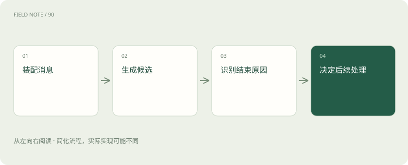
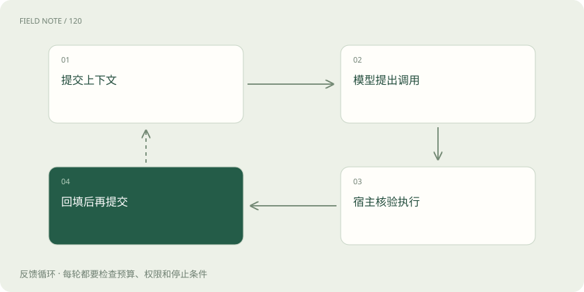
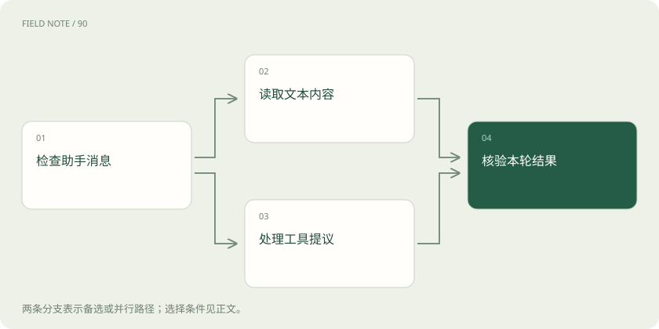

先读哪些知识
先用一个类比理解
类比只帮助建立直觉，不等同于技术的完整机制。
一图看懂

先把一次生成与一段聊天分开
Chat Completions 的中心对象是一次补全请求：应用把 messages 交给 /v1/chat/completions，服务返回包含 choices 的结果。界面上的一段聊天通常由许多次请求组成，聊天窗口不是协议对象，服务也不会因为同一个用户再次访问就自动找回全部记录。读懂这个边界，才能解释为什么刷新页面后历史还在，而模型却可能不知道先前选定的订单。
截至本文核查日期，官方仍支持 Chat Completions；选择它并不等于接口已经失效。需要同时确认目标模型与功能的支持范围。协议名称相同不能保证所有模型都接受相同参数，也不能保证其他厂商的兼容端点复现全部行为。采购或接入评审应列出实际需要的能力，而不是只看是否出现熟悉的消息字段。
messages 是带来源的输入清单
messages 中的角色描述内容来自谁，以及如何解释它。开发者约束、用户需求、助手历史和工具回执承担不同作用；消息顺序也会改变语境。content 不应一概理解成一个普通字符串，具体模型可能支持多模态内容部分。把一份图片说明直接替换成图片本身，涉及模型能力、内容类型和数据传输，而不是仅改一段提示词。
以售后咨询为例，用户说“换成蓝色”必须与前面的商品及规格对应。应用应把必要历史装进本轮请求，并保留“只查询库存”的有效限制。历史中的助手猜测不能升级成已核实库存，外部商品描述也不能变成运行指令。协议保存了角色结构，但事实核验和授权边界仍由应用负责。
choices、message 与结束原因各有职责
非流式返回中的 choices 表示候选结果集合，每个候选包含自己的 index、message 和 finish_reason。message 中可能出现文本，也可能包含 tool_calls；不能只要请求成功就假定 content 一定有可展示答案。输出因长度限制停止、正常停止或者交接工具，意味着下一步处理不同。结束原因是协议层线索，并不是业务正确性的证明。
例如客服生成了半句退款解释且 finish_reason 表示长度限制，页面不能将它标为已完成答复；若返回工具调用，就应进入工具处理路径。usage 用于核对令牌消耗，不等于候选答案质量。请求级标识、候选索引、结束原因和计量信息分别服务于追踪、组装、流程判断与成本观察，应避免混成一个成功标志。
图解：工具往返闭环

工具调用是提议、执行、回填的往返
工具定义向模型说明函数名称、参数含义和参数结构。模型生成 tool_calls 时，是提出希望调用什么及携带哪些参数，真正访问库存或改变订单的是宿主应用。应用必须验证参数、身份和权限，然后将真实结果作为 tool 消息回填，并用 tool_call_id 对应原调用。助手调用消息和回执一起构成下一轮需要的上下文。
售后助手提出查询蓝色尺码库存，并不代表仓库系统已经被查询。若系统超时，回执应说明查询未确认，不能编造库存为零。严格参数结构也不保证参数中的订单属于当前用户，更不保证业务执行成功。对有副作用的动作，需要独立维护业务请求标识和执行记录，避免网络重试导致重复修改。
流式 delta 是逐步组装的材料
启用 stream 后，接收方得到增量块，而不是一串完整 message。delta 中可能出现角色、文本或工具调用片段；工具调用通过 tool_calls 中的 index 等信息归并到对应调用，函数参数字符串常常横跨多个片段。接收一段参数就立刻执行，会在参数尚未闭合、名称尚未明确时触发错误动作。
阅读流式记录时，先分清候选 choice 的索引，再识别该候选内的工具索引，最后按顺序装配内容。一个网络读取块并不一定等于一个完整 SSE 事件，网络层切分不能代替事件解析。界面可以逐步显示文本，但执行工具前应等到相关生成完整并完成结构与权限校验。这是展示的及时性与业务动作的确定性之间的重要边界。
finish_reason、usage 与 DONE 不可互换
流中出现 finish_reason，说明某个候选的生成为什么结束；它不自动意味着后面没有计量块。请求 stream_options.include_usage 时，正常结束前还可能出现携带总 usage 的额外块，其中 choices 可以为空。若客户端假定每个块都有第一个候选，恰恰会在统计阶段出错；连接中断也可能导致未收到最终计量。
流式终止标记 [DONE] 属于传输约定，和“这份退款说明符合政策”不是同一回事。应分别记录生成结束、流已关闭、计量是否收到以及业务结果是否确认。若已展示了一半回答后断线，不能仅凭收到过文字就宣布完成，也不能因为缺少计量就把费用记成零；需要保留未确认状态供后续核查。
结构化要求与状态保存需要显式设计
参数约束、结构化输出和存储选项处理的是不同问题。工具参数的 strict 用于约束调用结构，回答格式约束面向最终结果，而 store 控制服务侧相关存储行为；任何一个都不自动提供应用自己的长期用户记忆。Chat Completions 的多轮上下文通常由应用选择历史消息并重新提交，保存记录与让模型看到记录必须分别设计。
如果售后系统只保留摘要，应保留订单标识、已核验事实和当前限制，不能把未完成动作压缩成已完成。存储默认值可能随账户条件及接口文档调整，应显式设置并核对当前官方规则，而非把旧经验写成永久承诺。历史进入后续请求仍有上下文预算和计量影响，不能把数据库保存理解为免费无限输入。
图解：返回结果分流

用一份往返记录验收兼容性
验收不需要先写程序，也可以拿一份脱敏请求与响应逐项阅读：输入是否包含必要限制，返回属于文本还是工具交接，回执是否对应正确标识，流是否完整，结束原因是否允许展示完成。对兼容服务尤其要核对工具参数分片、空 choices 的计量块以及错误结构，单次纯文本演示无法覆盖这些差异。
售后流程的验收样本可包含正常库存、查询超时、参数缺失与用户撤回修改授权。每个样本都应定义预期业务状态，而不只比对答案句子。向 Responses 迁移时，还要同时修改输入组织、输出读取和事件处理；仅替换路径会让 choices 读取逻辑失效。本文的订单案例是教学设计，实际能力应以所用模型和官方接口说明为准。
放在一起对比
| 观察对象 | 承担职责 | 不能推出的结论 |
|---|---|---|
| message | 承载助手输出 | 业务已执行 |
| finish_reason | 说明候选终止原因 | 答案正确完整 |
| usage | 反映令牌计量 | 生成质量可靠 |
| DONE | 标记流终止 | 换货已经成功 |
放进真实场景
售后助手收到库存调用提议后，核验订单权限，读取仓库回执，再生成换货说明。
别踩这个误区
想一想
为什么已经收到 DONE 仍不能认定换货成功？
DONE 结束的是生成流，换货是否成功还要查看宿主执行记录与业务回执。
关联阅读
资料与边界
本文为原创知识讲解。类比和图示经过简化；示例数字不代表实测或报价。整理日期：2026-11-05。文末列出对应技术的原始资料，具体功能与版本支持请以原文为准。